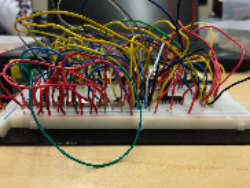

Projects
AOI Circuit Design Project : November 27, 2017 - December 6, 2017

Course: Digital Electronics
Partner: Brian Anderson
After several lectures, our Digital Electronics class was assigned to utilize our knowledge gained in the class from lectures and activities to build a circuit using AOI Logic with the constraint of having at least six inputs. My partner and I, both having a love for basketball, decided to create a circuit that could help basketball management. One problem coaches and staff have is to decide who to give maximum minutes to in a game. Many end up making the wrong choice as the player they choose would commit too many fouls in the game. To alleviate this problem, my partner and I defined what it meant to be a “safe player” based on a player’s fouls (each foul with a different weightage) from their previous game. Using this definition, we created a truth table for each scenario of the seven fouls, our seven inputs, a player could have. We obtained a logic expression from this and spent time simplifying it. We utilized this expression to simulate the circuit on Multisim. Based on this simulation, we were able to understand which integrated circuits(ICs) and how many of each were needed. After obtaining these materials we breadboarded the circuit and demonstrated to our class. For this project, I was the team manager and completed the truth table, simulation, and the majority of the documentation. This project taught me the four steps on how to make a circuit utilizing AOI logic (truth table, logic expression, simulation, breadboard). I was able to sharpen my skills on simplifying logic expressions and the algebra behind it. I was also able to further my teamwork and communication skills as we split up the tasks based on our strengths. Overall, from this project, I am glad that my partner and I were able to do something for the basketball field using what we learned so far in the class.